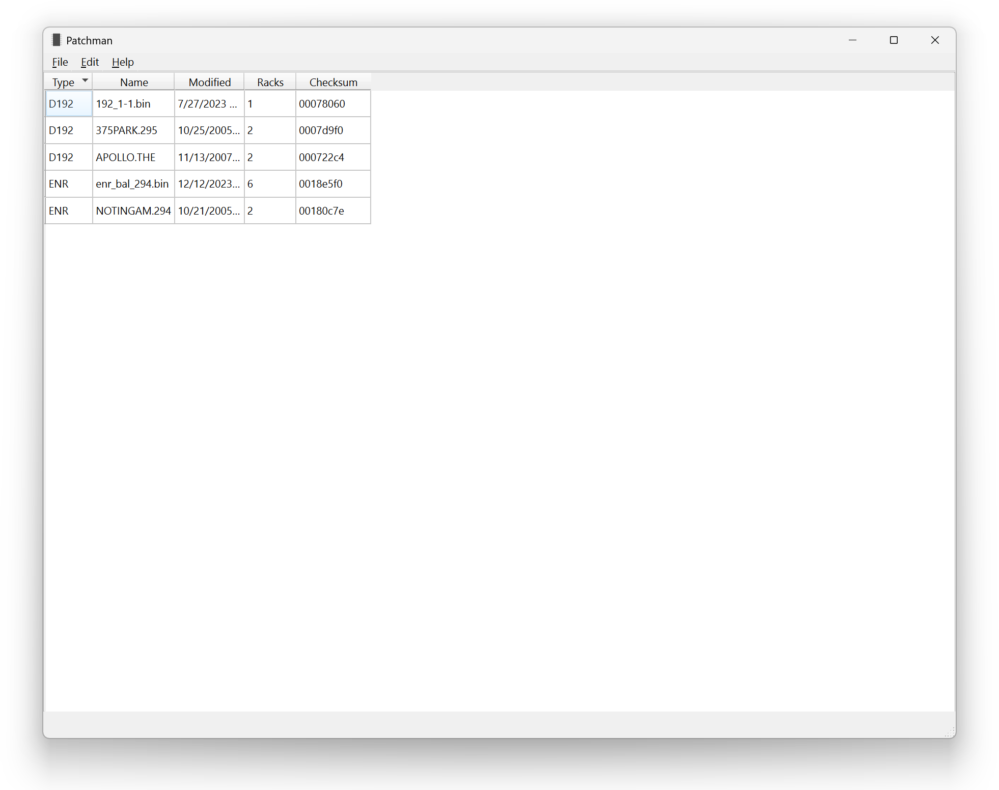
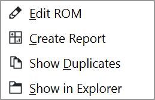

Browser#
The Browser is the first window shown when opening Patchman.
Upon launch, the browser will scan all folders set in the settings (see First-Time Setup for how to change these folders); progress is illustrated at the bottom of the window.
A table lists the type, name, date, rack count, and checksum for each ROM found. Click on a column header to sort the table by that column.
Note
If files are missing, ensure the path they are in is set as a search path in the settings and that it is a supported file type.
To edit a file, double-click on its entry.
If the same patch table appears in multiple files, each file will be marked with a icon.
{kind=link}
Further options are available by right-clicking on its entry:
- Edit ROM
Open the Editor. Same action as double-clicking on the row.
- Create Report
Create a document visually demonstrating, for each rack in the ROM, the location of each DMX address. See Reports.
- Show Duplicates
Show all ROM files that contain the same patch information as the selected ROM file.
- Show in Explorer
Open the file browser and highlight the file.